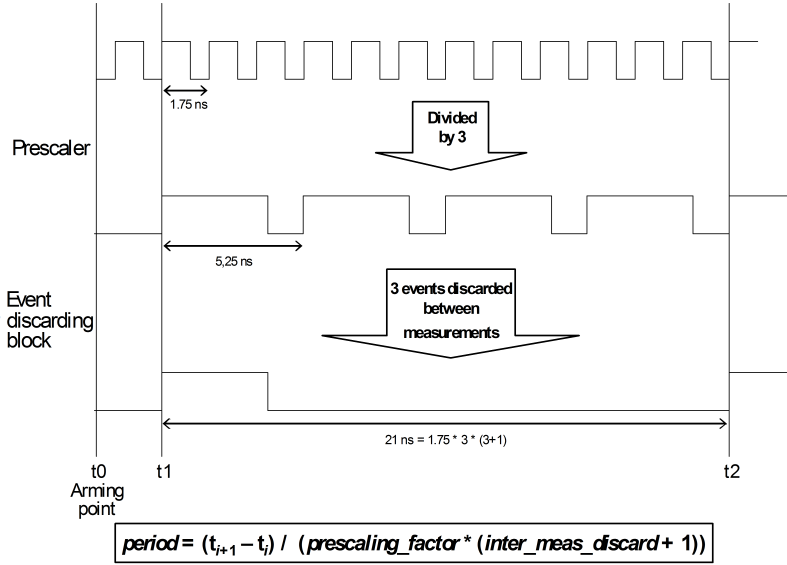
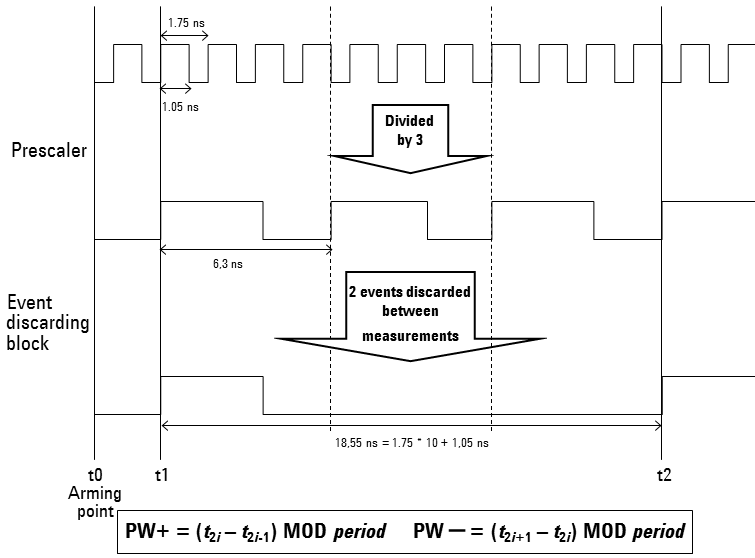

TMU per Pin overview
The Time Measurement Unit (TMU) per Pin functionality is integrated into the test processor of the Smart Scale cards. It provides a fast and easy way to accurately measure the period (frequency), jitter, pulse width, and rise/fall time of periodic and non-periodic output signals.
The TMU measures the distance of a certain type of event from the point in time when the TMU is armed (activated). Events are defined by a slope (rising or falling) of the DUT signal to be measured, and by a voltage threshold. The event occurs whenever a slope of the selected type crosses the specified voltage threshold. If the event is defined by a rising (falling) slope, then only rising (falling) slopes will be taken into consideration. But you can also require that alternately rising and falling slopes are considered as events. This option allows you to determine the distance between a rising and a falling slope in one measurement. The activation (arming) of the TMU is controlled from the pattern by special waveforms (see Starting a TMU measurement from a pattern).
The operation of the TMU is determined by its sample rate. This is the minimum distance that must exist between two samples, that is, measured events. If the event to be measured can occur at a shorter distance, the DUT signal must be transformed in order to be correctly measurable. This transformation is performed by two initial processing blocks of the TMU, a prescaler and an event discarding block (in this order).
The prescaler reduces the frequency of the DUT signal by a user definable factor. The event discarding block can suppress a certain number of event occurrences, also user definable, between two samples, and also before the first sample.
The event discarding block requires that events occur at a certain minimum distance in the DUT signal. If the distance between two relevant events is smaller than the sample rate of the TMU, the signal can only be passed on to the event discarding block after its frequency has been reduced by the prescaler. For more information on the operation mode of the prescaler see the examples below.
Possible Prescaler values for Smart Scale (and PSSL standard) pins are 2 through 17. A value of 1 means no prescaling. Events are distinguished by a slope of the DUT signal, and by a voltage threshold. If the EDGE_SELECT is set to RISE_FALL, the prescaler value must be <17 and >1.
If the prescaler is set to a value > 1, the first event is always ignored. This is not to be confused with the option to discard events before the first sample. The former is a system restriction, the latter is an additional user option.
Since every channel has its own TMU, it is possible to make TMU measurements on several pins in parallel. These parallel measurements can be different from pin to pin. For example, the period length can be measured on one pin, and jitter on another. You can also execute a functional test for a receive pin and analyze its output signal with the TMU in parallel. A PLL can be kept alive during a TMU measurement.
Determining the event threshold
By default, the TMU looks up the primary level setup to determine the event threshold. If one of the vth or voh resources is specified there, this voltage will be the threshold for the pins on which the TMU is run; the vol resource will only be used if none of the other two resources is present. But you can also specify a different voltage threshold.
But note that if you define your own voltage threshold for a receive pin and execute a functional test for this pin in parallel with a TMU measurement, the functional test will also be executed with the modified voltage level. The original voltage levels will be restored by the system after the measurements.
Examples
Description
The following figures show the basic principles for period and pulse width measurements. Note that the sample rate of the TMU is 20 ns, and that the minimum distance between two events required by the event discarding block is about 4 ns (for this latter requirement see also Dealing with very high data rates).
Exmple 1: Period measurement
The first example illustrates a period measurement. The expected period length is 1.75 ns. Since this is smaller than the minimum distance required by the event discarding block, the prescaler is set to 3. Three events are then discarded between measurements to satisfy the sample rate. No discard before the first measurement has been defined. The event is a rising slope.

Note the following points:
- By the combined effects of prescaler and event discarding block, eleven events (rising edges) are skipped between the first sample (at t1) and the second sample (at t2).
- Since the prescaler is set to a value > 1, a certain number of events before the first sample is ignored. The graphic assumes that only one event is skipped. But if the signal to be measured is already present when the TMU is armed, the number of skipped events can vary.
- The same effect could be achieved in this example by setting the prescaling factor to 12 and the events to be discarded between samples to 0.
- A typical application of event discarding between samples would be a period measurement consisting of only two time stamps which are taken at a very large distance. In this case increasing the prescale factor alone will not be sufficient.
Example 2: Pulse width measurement
The second example illustrates a measurement where rising and falling edges are sampled alternately. This is the basis for measurements of the positive or negative pulse width. No discard before the first measurement has been defined. The graphic only illustrates the case of the positive pulse width.

Note the following points with respect to alternate sampling of rising and falling edges:
- The event discarding block only considers the rising edges of the prescaler output; the falling edges are ignored. Therefore all selected events (that is, also the falling edges) are represented by the prescaler as rising edges.
- If in this case the prescaler is set to n, then after selecting an edge, it skips the next n edges of the same type, and then selects the next edge of the opposite type. Thus in the example, after selecting a rising edge, it skips the next 3 rising edges and then selects the next falling edge; and after selecting a falling edge, it skips the next 3 falling edges, and then selects the next rising edge.
- If an even number (including 0) of events is to be discarded before the first sample, the first sampled event will be a rising edge. If you discard an odd number of events before the first sample, the first sampled event will be a falling edge. In this case the formulas for PW+ and PW-, as specified in the graphic, must be interchanged.
- If you specify an odd number of events to be discarded between samples (for example, only one event in the figure above), the sampled events will all be of the same type, that is, they will be either all rising or all falling edges. Therefore, if you want to measure the pulse width, the number of events to be discarded between two samples must be even.
- With alternate sampling of rising and falling edges, the period length can be calculated
from the samples by the formula
(ti+1 - ti-1) / ((prescaling_factor + 0.5) * (inter_meas_discard + 1) * 2).
Functional changes
- Introduced in SmarTest 7.1.0